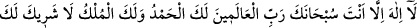
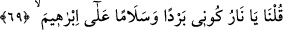
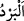
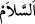

onun halini en iyi bilen benim. Ben, onun dostuyum. İşte o zaman benimle dostumun
arasında olmayın. Çünkü o, benim dostumdur ve ondan başka dostum da yoktur. Onun
ilâhı benim, onun da benden başka ilahı yoktur.” buyurdu.
Onu ateşe atacakları vakit rüzgarların bekçisi melek geldi ve: “Eğer dilersen, bu ateşi
gökyüzüne savurayım.” dedi. Sonra denizlerin bekçisi melek geldi ve: “Ey İbrahim,
eğer istersen bu ateşi söndürürüm.” dedi. İbrahim (a.s.): “Benim size ihtiyacım yok.”
diye cevap verdi. Sonra başını semâya kaldırdı ve şöyle duâ etti: “Allâh’ım semâlarda
tek olan sensin, yeryüzünde ise yalnız olan benim. Yeryüzünde benden başka sana kulluk
eden yok. Allah bana yeter. O, ne güzel vekildir.”
Hz. İbrâhim’i ateşe attıkları vakit şöyle dedi:
“Senden başka hiçbir ilah yoktur. Seni tesbih ederim ey Âlemlerin Rabb’i, hamd
sanadır, mülk senindir ve senin ortağın yoktur.”
et-Te’vîlâtü’n-Necmiyye’de şöyle der: “Allah Teâlâ sâlih kullarından birini kemâle
erdirmeyi murad ettiği vakit ona karşılık, büyük bir topluluğu fedâ eder. Nitekim O,
denizde bir balığı büyütmeyi dilediğinde onun için pek çok küçük balığı fedâ eder. İşte
Allah, İbrahim (a.s.) ile olan tertemiz dostluğunu beşeriyetin kirlerinden temizlemeyi
murâd edince, Nemrûd ile kavmini onun için fedâ etmiştir. Öyle ki onlar, davalarında
haksız olduklarını bildikleri halde, onu yakmaya toplandılar. Onu mancınığa koydular ve
onu ateşe attılar.
Hz. İbrahim, Allah Teâlâ’ya yönelerek ve kendisini O’na teslim ederek
yaratılmışlardan tamâmen ümidini kesti. Hattâ Cebrail (a.s.) havada iken ona yetişti ve:
“Ey ibrahim, bana ihtiyacın var mı?” diyerek onu sınadı. Halbuki onda varlıktan bir
eser kalmamıştı ki ihtiyaç ona taalluk etsin. İbrahim (a.s.): “Sana ihtiyacım yok.” diye
cevap verdi. Sonra Cibril (a.s.) yine onu sınamak için: “Rabb’inden iste.” dedi. Hz.
İbrahim ise, yine sırrını Cebrâil’den gizledi. Hâlini açmak istemedi. “O’nun hâlimi
bilmesi, bana yeter. İstemeye gerek yok.” dedi. Böylece hâlini ona ızhâr etmedi. İşte
bunun üzerine şöyle buyurarak ezelî inâyet onun imdadına yetişti:
69. “Ey ateş! İbrahim için serinlik ve esenlik ol!” dedik.
“Biz de: “Ey ateş! İbrahim’e serin ve esenlik ol” dedik.” “
(serinlik, soğuk)”
sıcaklığın zıddıdır. “
” ise âfetlerden uzak olmak demektir. Yâni, ey ateş serin ol,
harâretin gitsin, serinliğin de selâmet olsun, dedik. Bunun üzerine ateşin sıcaklığı ve
yakıcılığı zâil oldu. Sâdece ışık ve aydınlığı kaldı. Muhakkıklar, lafzın zâhirî delâletine